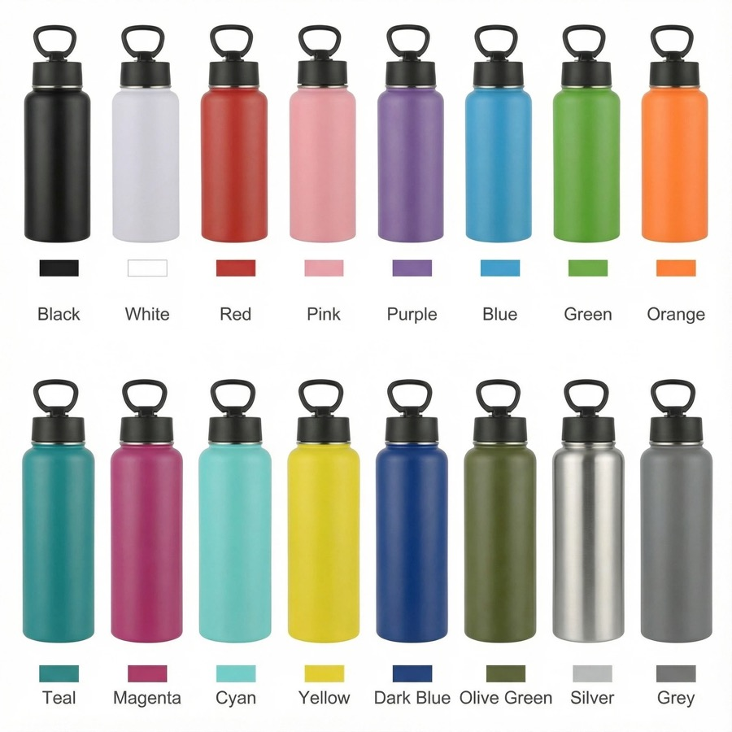
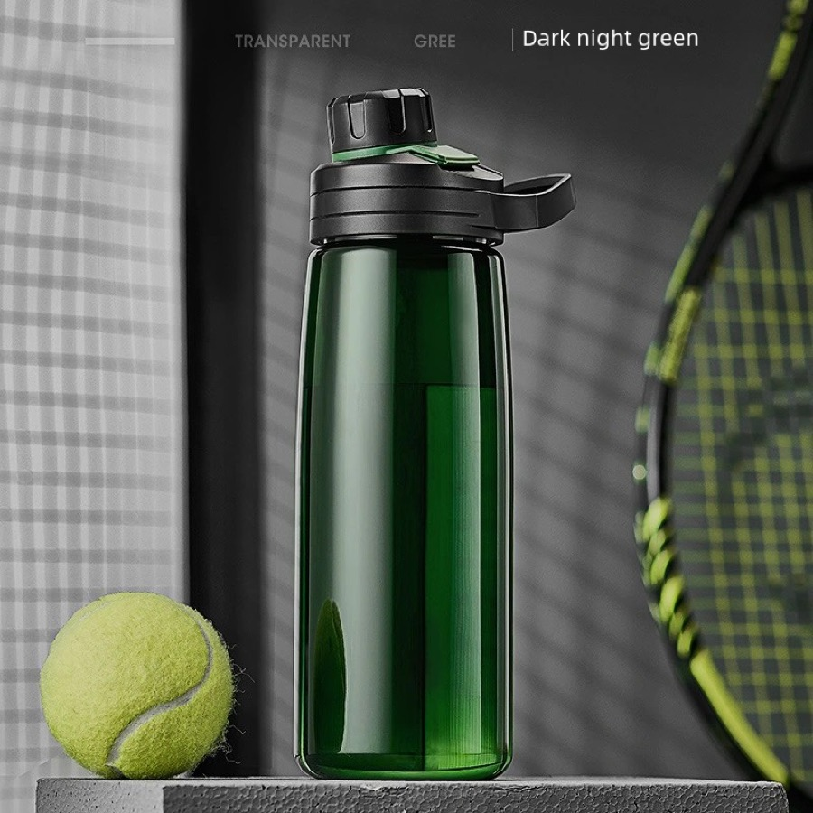
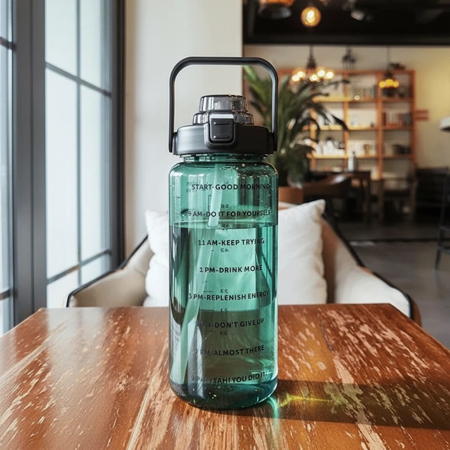

Custom Logo Water Bottle Sourcing
Buyers comparing plastic, sports and large-capacity bottles where logo placement and sales channel matter.
Custom drinkware sourcing guide
HDS Drinkware is a China-based custom drinkware OEM/ODM sourcing partner for fitness brands, schools, promotional buyers, Amazon sellers and wholesalers. This page explains product options, MOQ details, logo methods, packaging choices, sample timing and quote preparation for B2B buyers.



Buyers comparing plastic, sports and large-capacity bottles where logo placement and sales channel matter.
This page targets product-with-logo intent, while the China supplier page targets supplier evaluation.
PC water bottles, sports bottles, 64oz bottles, kids bottles and daily hydration bottles can be discussed by capacity, color, finish, lid, accessory, packaging and destination market. HDS helps buyers compare practical options instead of pushing a single retail-style SKU.
MOQ starts from 200 pcs for selected custom drinkware projects. The final MOQ depends on material, color, logo method, packaging, sample needs and current supply chain availability.
Food-safe, BPA-free plastics including ultra-clear Eastman Tritan-style copolyester, lightweight PP for cycling sports, break-resistant PC, and heavy-duty PETG for 64oz large capacity jugs, equipped with durable silicone sports nozzle lids.
Logo customization support includes laser engraving, silk screen printing, UV printing, heat transfer, labels and packaging logo placement. The best method depends on product surface, artwork colors and buyer channel.
We conduct pressure leak tests, 1.2m drop-impact durability tests, clear measurement scale printing accuracy audits, odor-free hot water chemical leaching evaluations, and strict bulk weight-to-carton-dimension optimization checks.
Product comparison
| Option | Best For | Customization Focus | Buyer Notes |
|---|---|---|---|
| Entry test order | New sellers and first projects | Stock color, simple logo, standard packing | Useful when the buyer needs to validate demand with lower inventory pressure. |
| Private label order | fitness brands, schools, promotional buyers, Amazon sellers and wholesalers | Logo, color, packaging, barcode and carton marks | Better for buyers who need a repeatable product line. |
| Gift packaging order | Gift companies and corporate buyers | Gift box, insert, card, tote bag and bundle planning | Presentation and sample approval should be confirmed early. |
| Wholesale repeat order | Distributors and wholesale buyers | Stable product, mixed colors, cartons and shipping plan | Best when reorder timing and carton data matter. |
| Method | Best Use | Strength | Notes |
|---|---|---|---|
| Laser engraving | Stainless steel and premium gifts | Durable, clean and professional | Good for corporate and private label positioning. |
| Silk screen printing | Simple logos and larger runs | Clear and cost-effective | Works best with simpler artwork. |
| UV printing | Color logos and detailed artwork | Better visual detail | Sample review is recommended before bulk order. |
| Label or packaging branding | Fast tests and gift sets | Flexible and practical | Useful when buyers want branding without complex setup. |
| Packaging | Best For | Support Details |
|---|---|---|
| Standard box | Samples and wholesale orders | Basic protection and practical carton packing. |
| Color box | Amazon, Shopify and retail channels | Can support barcode, brand information and product presentation. |
| Gift box | Corporate gifts and holiday programs | Can coordinate inserts, cards, sleeves and custom box print. |
| Custom bundle packaging | Gift companies and promotional buyers | Can combine drinkware, cards, tote bags, labels and carton marks. |
Custom Water Bottles with Logo for E-commerce, Events and Wholesale is suitable for fitness brands, schools, promotional buyers, Amazon sellers and wholesalers. Amazon sellers may use low MOQ orders to test color demand and listing response. TikTok Shop sellers may focus on visual product styles and fast samples. Shopify brands often care about private label packaging and repeat order consistency. Gift companies and corporate buyers usually need logo approval, gift box planning and event timing. Distributors need stable product options, carton information and shipping coordination. HDS supports these buyers with sourcing, OEM/ODM customization, packaging coordination and sample support before bulk order.
Quote and sample checklist
Send these details together and the sales team can compare realistic product, logo, packaging and shipping options faster.
The MOQ starts from 200 pcs for selected custom drinkware projects, depending on product type, logo method, packaging requirements and current material availability.
Yes. Buyers can request stock samples or logo samples before bulk production. Sample timing depends on stock status, artwork, logo method and packaging complexity.
Common logo methods include laser engraving, silk screen printing, UV printing, heat transfer, labels, inserts and custom packaging branding.
Yes. HDS can coordinate DDP/DDU shipping options by project and destination market, while also supporting FOB or EXW discussions when needed.
This page is written for fitness brands, schools, promotional buyers, Amazon sellers and wholesalers who need custom drinkware sourcing, logo customization, packaging support and export coordination from China.
Yes. HDS can discuss OEM/ODM customization by product type, quantity, logo method, packaging requirements and production feasibility.
Water bottle supplier China | Plastic water bottles | Sports water bottles | Quote checklist
Send your product photo, quantity, logo requirement, packaging request and target market. HDS will review the details and reply with a practical sourcing path.